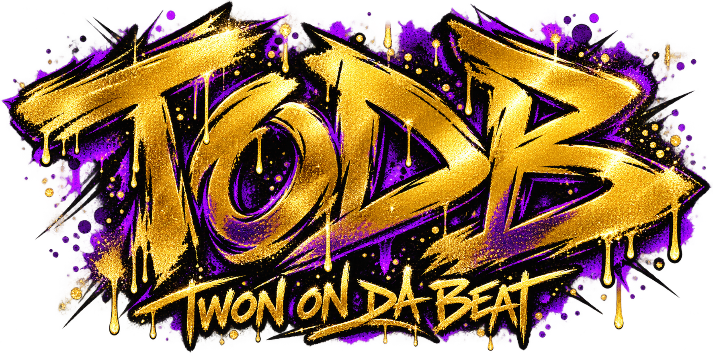

SOUND ENGINE01
KNOB LEVELS / BAY MAPPLAY MIDI · SHAPE YOUR SOUND
Play notes to move the trains. Turn the controls to shape your sound.
LIVE WAVEFORM0 ACTIVE VOICES—−∞ dB
ENVELOPE / SLIDE02
SHAPE THE SOUNDAMP ENVELOPE
GLIDE / CONNECT YOUR NOTES

 510 / 415 / 707 · BAY MADE
510 / 415 / 707 · BAY MADEPlay notes to move the trains. Turn the controls to shape your sound.